Tell it what to back up
Drop in your Documents folder, your Pictures, the whole C: drive — anything that matters. Live size estimation while you choose, so you'll know up front if it fits.
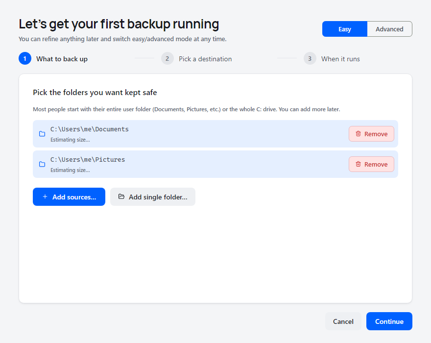
A desktop GUI for Restic. Encrypted, deduplicated backups to the cloud or your own drive. One program, one config folder, zero shell scripting.
Also for Mac (Apple silicon) · Mac (Intel) · Linux (x64) · Linux (ARM)
Here's the whole flow from clicking the download to recovering a file. Skim it once — it's short.
Drop in your Documents folder, your Pictures, the whole C: drive — anything that matters. Live size estimation while you choose, so you'll know up front if it fits.

Backups can go anywhere: an external drive plugged into the same machine, a folder on your NAS, or a cloud account you already pay for. The wizard shows the destinations you already set up; if you haven't yet, click "Or set up a new destination…" and we'll walk you through it.
The simple path. Pick "External drive" or "Local folder" from the Type dropdown, point us at the path, decide whether to encrypt — no OAuth, no API keys, no tokens. If it's a USB drive that's sometimes unplugged, give us the expected drive letter and volume label so we skip the run cleanly on days it's not connected. For a NAS, pick "Network share" and enter the share's user name and password: with administrator access on, those backups then run in the background too, even before you sign in.
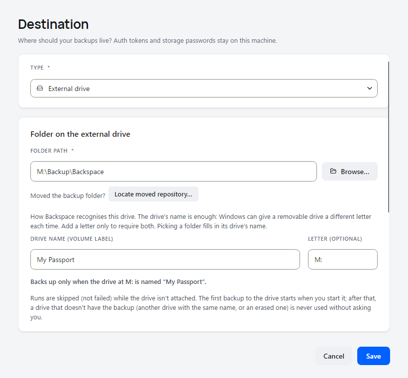
Same starting point — click "Or set up a new destination…" and pick your cloud. We open the provider's sign-in page; you copy back a token; we verify it works before anything writes. For Dropbox we use the app-scoped OAuth flow — the app only ever sees its own sub-folder inside your Dropbox, never the rest of your files. Tokens stay on your machine, encrypted at rest; the cloud provider never sees your data in the clear.
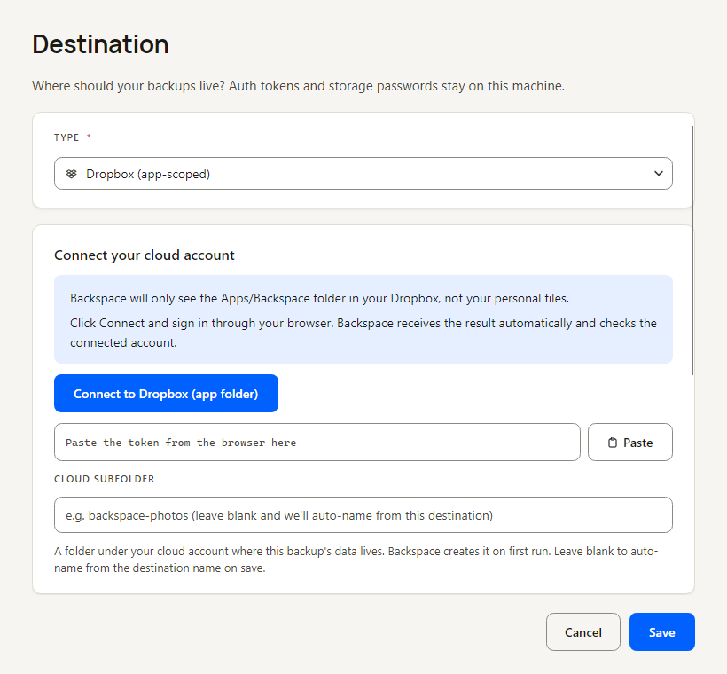
Sensible defaults: nightly at 8 PM, with a retention pyramid (keep daily snapshots for 7 days, weekly for 30, monthly for 90, yearly for 365). Customize freely. One more click and your first backup is running.
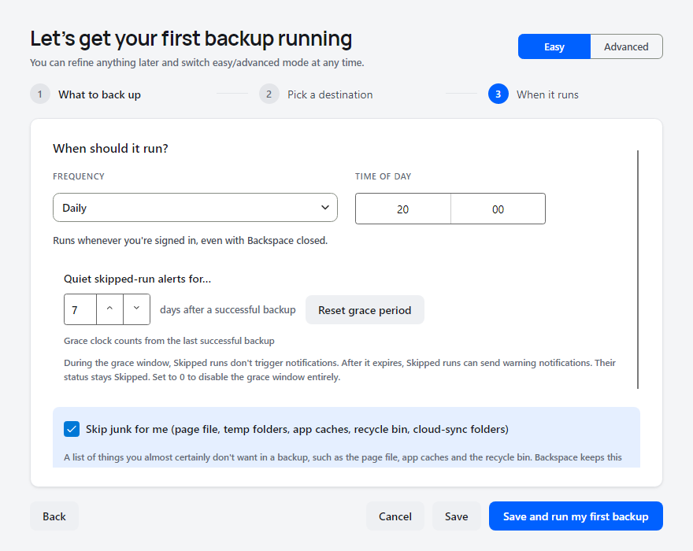
Live progress bar while the first run uploads. After that, the schedule takes over — your machine runs backups when you told it to, and nothing else.
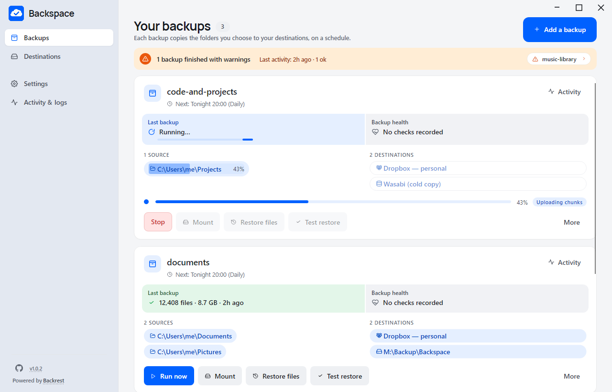
All your backups, one screen. Healthy runs get a quiet green dot; anything that needs attention surfaces at the top of the list.
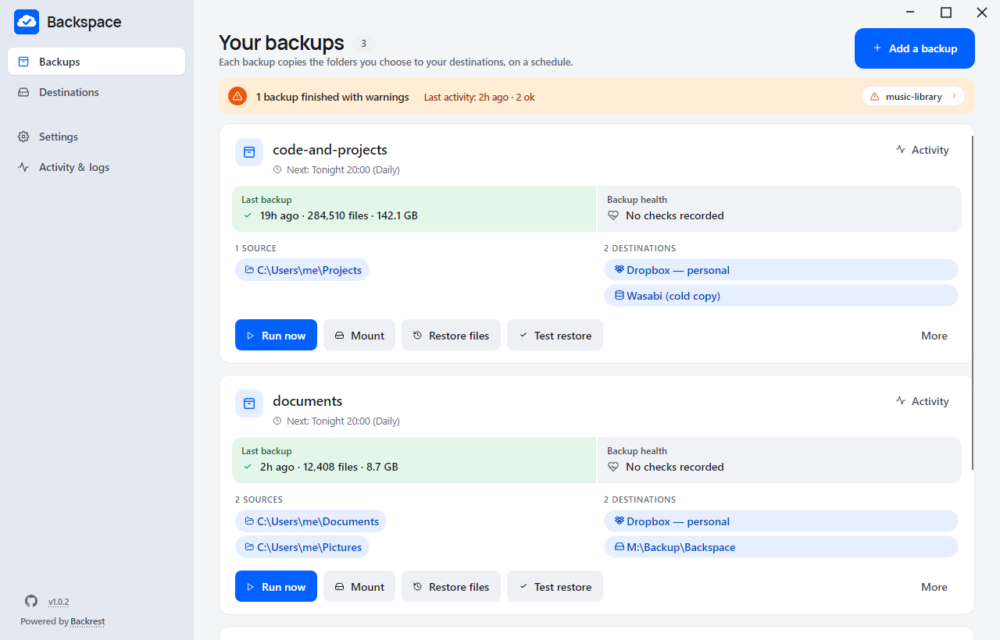
Click Restore files on the backup, then pick the date to restore from: yesterday's, last week's, a year ago.
Browse the snapshot. Filter by filename if it's a big repository. Tick checkboxes. The bottom strip shows the file count and total size as you select, so you know how big the restore will be before it starts.
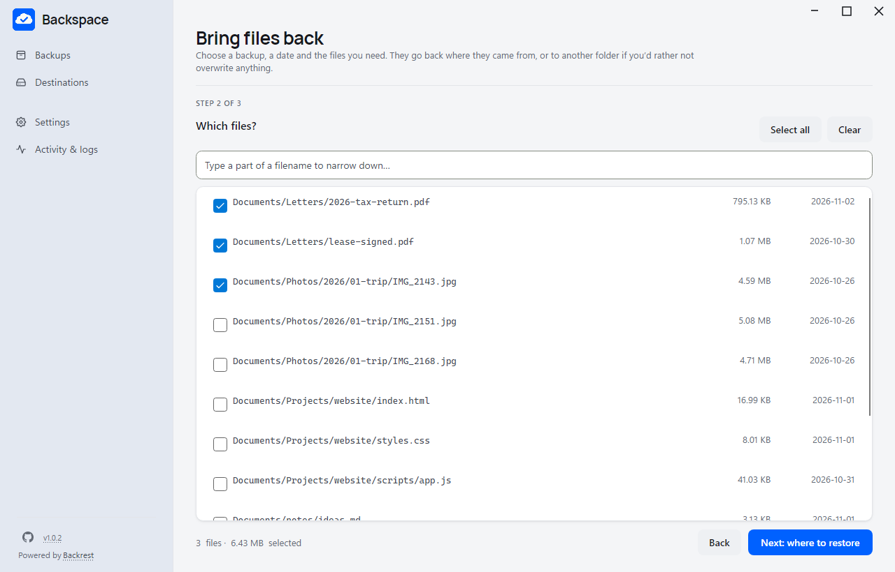
Back to the original folder where they came from, or to another folder if you'd rather not overwrite anything. Files download in parallel and each one is retried on its own, so one slow file doesn't hold up the rest.
Click Mount on a backup and its snapshots appear as an ordinary read-only folder in Windows Explorer. Open files with your usual apps, compare them with your working copy, or drag single files out. Nothing in the backup can be changed. The first time, Backspace installs the free WinFsp driver it needs (Windows asks for your approval).
The easy-mode wizard covers the 95% case. When you need more — multiple destinations per backup, exclusion filters, monitoring integration, the full Restic surface — every dial is one click away.
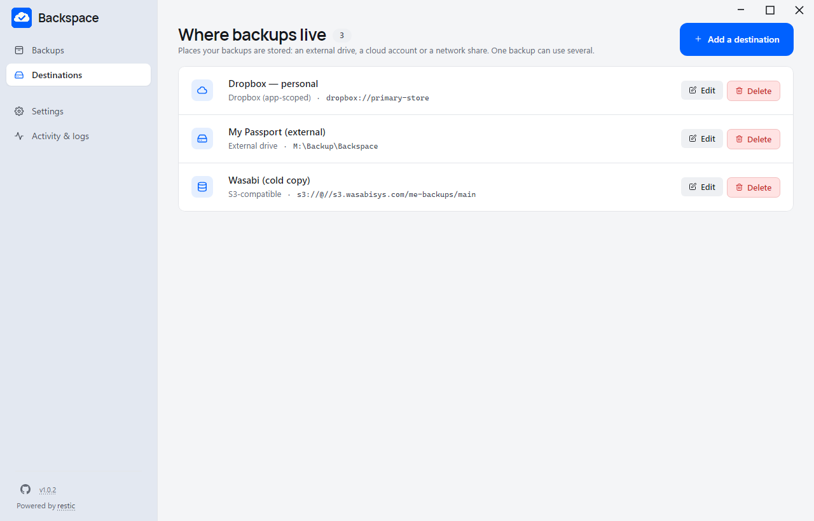
Add, edit, remove. Each backup can write to several destinations — local + cloud for the 3-2-1 rule — and each will only run when its destination is reachable.
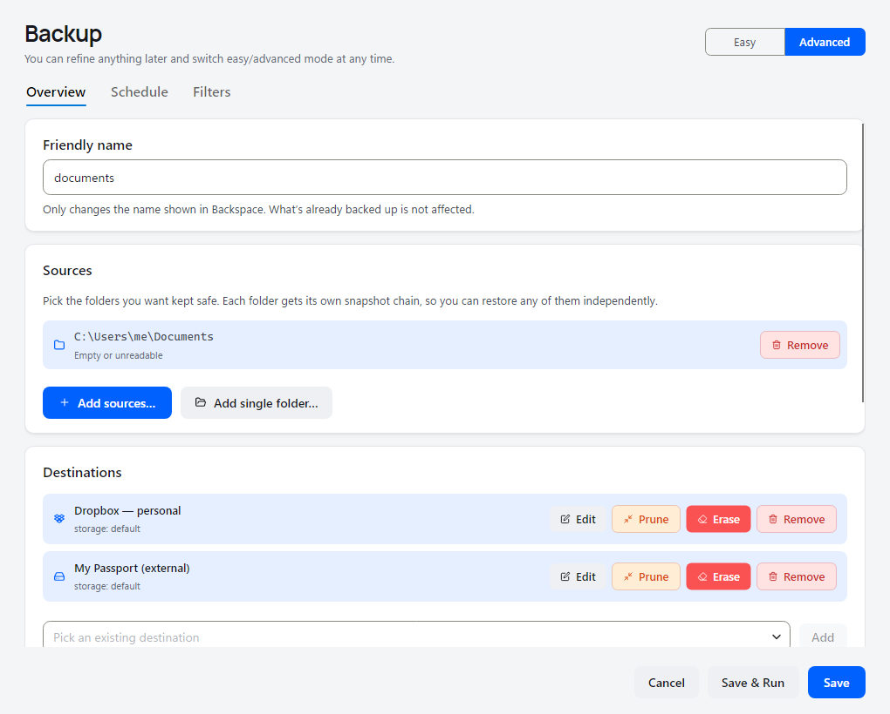
Multiple sources and destinations, recommended exclusions you tick, your own rules with a list of what they leave out, retention, a schedule summary with its Backups, Cleanup and Checks tabs, and the conditions to run on. Anything Restic supports, with a name to it.
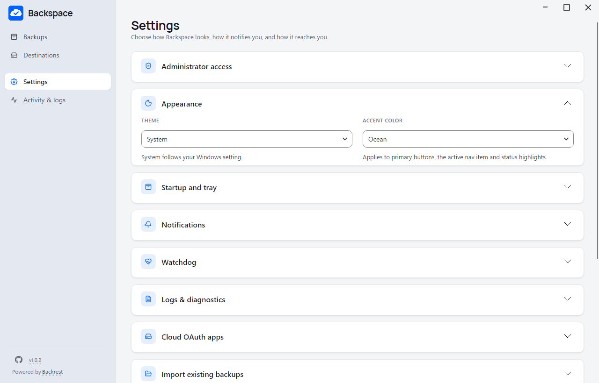
Schedules run whenever you're signed in, with no administrator rights needed. Allow administrator access once to include files that are in use and to run backups when nobody is signed in. Further down: Healthchecks.io auto-setup (paste your API key, we create and name the checks), failure emails via Resend or Mailgun, theme and accent, and an optional client ID per provider if you prefer your own cloud app.
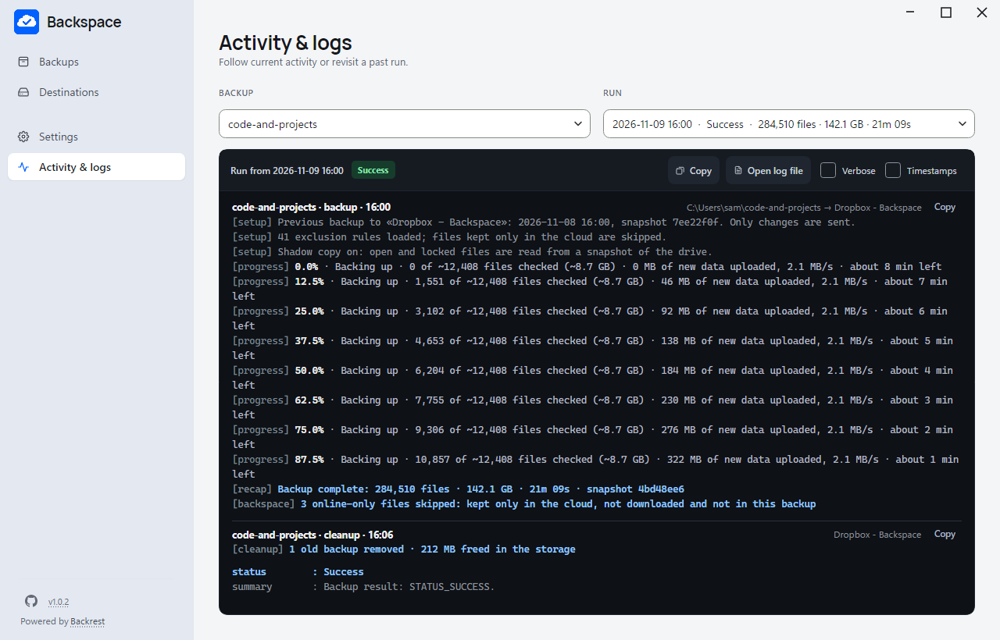
Every backup, check and cleanup says what it did, step by step, coloured by what each line is, and how it ended. Pick any run from a readable list; tick Verbose for restic's own output and Timestamps for each line's time.
Everything Restic on the CLI does, plus the things you'd otherwise cobble together from scheduled-task XML, batch scripts, and a watchdog process you wrote at 2 AM.
AES-256 client-side encryption with content-defined chunking. The same file across two backups uploads once. Nothing readable hits the cloud.
Starts with Windows and waits in the tray, like Dropbox, using no CPU between backups. Missed a run while the laptop was closed? It catches up once. Quit means nothing runs until you open it again.
Edit your exclude patterns with a live simulation pane. See exactly which files would be included or excluded before the first byte hits the cloud.
Everything lives in Backspace.config/ next to the binary. Back up the folder, drop it on a new machine, you're done.
Paste your API key, we create and name the checks for you. Local toast + bypassed-Focus-Assist alert with sound on failure. Optional email via Resend or Mailgun SMTP.
Run only on AC power, only on an unmetered connection, or both: a run waits for them, pauses when they stop holding and picks up again by itself. A drive on this computer is backed up even offline; the cloud catches up as soon as the network allows. Start one yourself and Backspace asks before overriding them.
Allow administrator access once: a small background service then takes a Windows snapshot (VSS) for each backup, so files other programs have open are backed up too, and backups run even before you sign in. No scheduled-task XML, no password stored.
Structure, data and restore checks, each on its own schedule. A restore check rebuilds real files from the latest backup into a temporary folder and checks each one, so a broken backup doesn't wait for the day you need it.
Mount a backup as a read-only folder in Windows Explorer: its folders list instantly and a file downloads only when you open it. Open files in their usual apps, compare them with your working copy, drag out the one file you wanted. Backspace installs the WinFsp driver it needs the first time.
Backspace is the friendly face. The bytes move through Restic — the proven, BSD-2 open-source engine — which Backspace runs itself, with its own schedule and run history. Restic and rclone come with it, and there is nothing to install by hand: if Microsoft's .NET runtime is missing, Backspace downloads and installs it for you (Windows asks for your approval once). Mount uses the free WinFsp driver, which Backspace installs the same way the first time you mount.
Cloud destinations go through rclone for the wire format, so Dropbox, OneDrive, Google Drive and anything-S3-compatible all look the same from Backspace's side. Bring your own OAuth client_id if you want your own rate-limit quota.